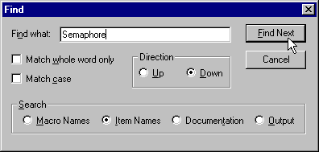

You can search for text by using the Edit->Find menu item or equivalent toolbar button:
Except in the case of the output pane (see the section called Output Pane in Chapter 2) the normal find dialog controls (Match case, etc...) are augmented by a set of radio buttons:
Macro Names
Searches for a macro name that matches the search string.
Item Names
Searches for an item whose normally displayed name matches the search string.
Documentation
Searches for a documentation page that contains the search string. If the string is found, the corresponding page is displayed in the documentation pane.
Note: This functionality is available only if IE4 is installed.
Output
Searches the output pane for the search string.
